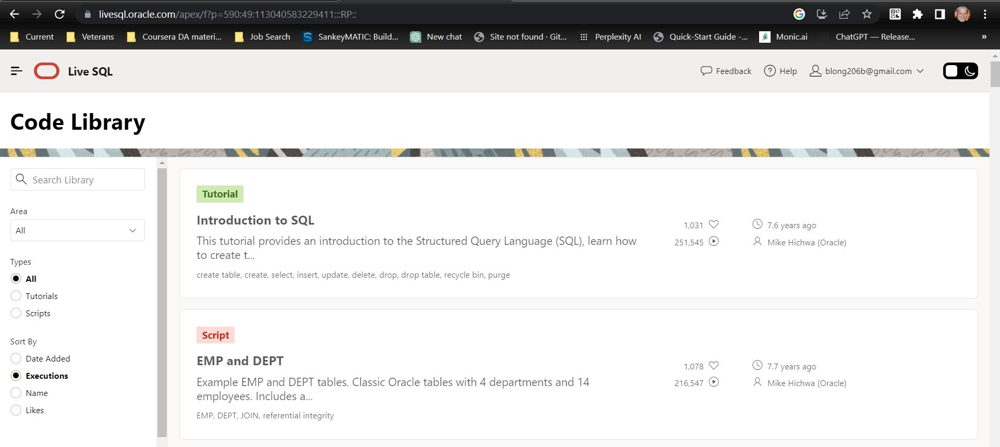

I used Oracle's Live SQL training resources to supplement my learning in two SQL courses (College, Job Training). Live SQL by Oracle is a fantastic platform that allows users to experiment with the Oracle Database.
Below are some of the SQL queries I have written and worked with:
SELECT * FROM employees WHERE salary > 50000;
INSERT INTO employees (name, position, salary) VALUES ('John Doe', 'Manager', 60000);
I have completed the following SQL courses:
If you are interested, you can view my certifications here.
If you are interested in discussing my SQL skills, potential opportunities, or collaborations, please don't hesitate to reach out to me.